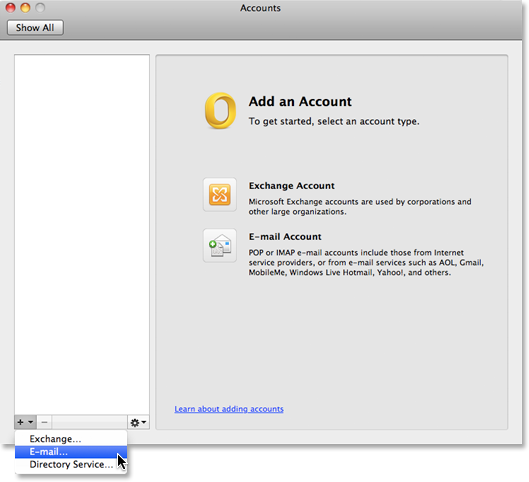
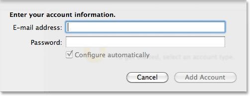

Microsoft Outlook 2011 per Mac¶
Passaggio 1: verifica di avere l’ultima versione¶

Passaggio 2: Aggiungi il tuo account di posta elettronica¶
Fai clic su Tools nel menu principale e quindi su Accounts.

Fai clic sul pulsante più (+)**situato nell’angolo sinistro e quindi su **E-mail... nel menu a discesa che compare.
Passaggio 3: Immetti le tue informazioni account¶
Immetti l’indirizzo di posta elettronica (che desideri impostare) nel campo E-mail address e la relativa password nel campo Password. Quando inizi a digitare la password, il resto della finestra di espande visualizzando altre opzioni.
Nella finestra espansa, immetti le seguenti informazioni relative al tuo account:
- E-mail address: immetti l’indirizzo da aggiungere - in questo esempio
name@example.com - Password: è quella che usi per accedere al Webmail relativo a questo account.
- User name:
name@example.com - Type: IMAP
- Incoming Server: imap.ewake.it
- Seleziona la casella: Use SSL to connect (recommended)
- Incoming server port: 993
- Outgoing server: smtp.ewake.it
- Seleziona la casella: Override default port
- Seleziona casella: Use SSL to connect (recommended)
- Digita 465 nel campo porta situato a destra del campo Outgoing server.
Dopo aver immesso tutte le informazioni, fai clic su Add Account.

Passaggio 4: Immetti un nome e una descrizione¶

Passaggio 5: Seleziona il metodo di autenticazione¶


Passaggio 6: Sincronizzazione delle cartelle IMAP¶
Fai clic sul pulsante Advanced situato nell’angolo in basso a destra della finestra di dialogo.


Fai clic sulla scheda Folders.

Per conservare i messaggi nella cartella appropriata, procedi come segue:
- Nel riquadro Sent, imposta Store sent messages in this folder: su Sent (Server) nel menu a discesa.
- Nel riquadro Drafts, imposta Store draft messages in this folder: su Drafts (Server) nel menu a discesa.
- Nel riquadro Junk, imposta Store junk messages in this folder: su Junk E-mail (Server) nel menu a discesa.
- Nel riquadro Move, seleziona Move deleted messages to this folder: e quindi Trash (Server) nel menu a discesa.
Fai clic su OK.
Altri suggerimenti¶
Come eliminare un account¶

Risoluzione dei problemi¶
Che cosa fare se Outlook non riesce a stabilire una connessione protetta¶
Se cerchi di scrivere un messaggio di posta elettronica e ricevi il messaggio di errore A secure connection cannot be established with the server imap.example.com, fai clic su Cancel.


Come visualizzare il registro errori¶